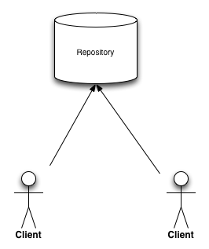
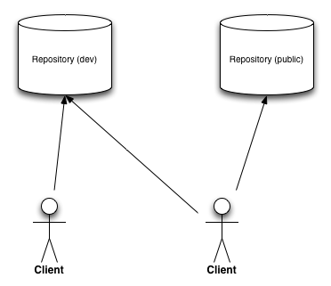
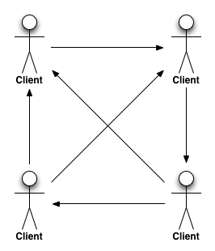

<!DOCTYPE html>
<html>
<head>
  <meta charset="utf-8">
  <meta http-equiv="X-UA-Compatible" content="IE=edge,chrome=1">
  <meta name="viewport" content="width=1024, user-scalable=no">

  <title>Version Control Basics With GIT- Ronni Elken Lindsgaard</title>

  <!-- Required stylesheet -->
  <link rel="stylesheet" href="core/deck.core.css">

  <!-- Extension CSS files go here. Remove or add as needed. -->
  <link rel="stylesheet" media="screen" href="extensions/goto/deck.goto.css">
  <link rel="stylesheet" media="screen" href="extensions/menu/deck.menu.css">
  <link rel="stylesheet" media="screen" href="extensions/navigation/deck.navigation.css">
  <link rel="stylesheet" media="screen" href="extensions/status/deck.status.css">
  <link rel="stylesheet" media="screen" href="extensions/scale/deck.scale.css">

  <!-- Style theme. More available in /themes/style/ or create your own. -->
  <link rel="stylesheet" media="screen" href="themes/style/web-2.0.css">

  <!-- Transition theme. More available in /themes/transition/ or create your own. -->
  <link rel="stylesheet" media="screen" href="themes/transition/horizontal-slide.css">

  <!-- Basic black and white print styles -->
  <link rel="stylesheet" media="print" href="core/print.css">

  <style>
    .url {
      font-style: italic;
    }
/*    pre, code {
      font-size: 15pt;
    }*/
  </style>

  <!-- Required Modernizr file -->
  <script src="modernizr.custom.js"></script>
</head>
<body>
  <div class="deck-container">

    <!-- Begin slides. Just make elements with a class of slide. -->

    <section class="slide">
      <h1>Version Control Basics With GIT</h1>
    </section>

    <section class="slide">
      <h1>Basic commands</h1>
    </section>
    
    <section class="slide">
      <h2>Initializing a repository</h2>
      <ul>
        <li>
          <pre><code>mkdir new-repo
cd new-repo
git init</pre></code>
        </li>
        <li>git clone <span class="url">remote-url</span>
          <ul>
            <li class="url">
              https://github.com/repository-name.git
            </li>
            <li class="url">
              git@github.com:repository-name.git
            </li>
          </ul>
        </li>
        <li><code>.git/</code></li>
      </ul>
    </section>

    <section class="slide">
      <h2>Adding files to a repository</h2>
      <ul>
        <li><code>git add <span class="url">file</span></code></li>
        <li>Files need to be added manually for every commit</li>
        <li>Do not use <code>-a</code>, ever!</li>
        <li>Ignored files will not be added
        <li>Do not add autogenerated or computer specific files</li>
      </ul>
    </section>


    <section class="slide">
      <h2>.gitignore</h2>
      <ul>
        <li>Place file in repository root</li>
        <li>Syntax:
          <pre><code>.classpath
.project
.settings/

.idea/
*.iml
*.iws</pre></code>
        </li>
      </ul>
    </section>

    <section class="slide">
      <h2>git commit</h2>
      <ul>
        <li><pre><code>ronni@example$ git commit -m "Added some slides"
[master feef0cd] Added some slides
 1 file changed, 174 insertions(+)
 create mode 100644 index.html</pre></code></li>
        <li>Every commit has a specific 41 character changeset id</li>
        <li>Changes are stored incrementally</li>
        <li><code>git commit --amend --reuse-message=HEAD</code></li>
      </ul>
    </section>
    <section class="slide">
      <h2>git status</h2>
<pre>ronni@example$ git status
# On branch master
# Changes to be committed:
#   (use "git reset HEAD <file>..." to unstage)
#
#	new file:   index.html
#
# Changes not staged for commit:
#   (use "git add <file>..." to update what will be committed)
#   (use "git checkout -- <file>..." to discard changes in working directory)
#
#	modified:   boilerplate.html
#
# Untracked files:
#   (use "git add <file>..." to include in what will be committed)
#
#	.index.html.swp</pre>
    </section>
    <section class="slide">
      <h2>git log</h2>
      <pre>ronni@example$ git log
commit feef0cda4c292c1c613695def03d5ac4d778e7d9
Author: Ronni Elken Lindsgaard <rel@it-minds.dk>
Date:   Fri Jan 31 10:58:15 2014 +0100

    Added some slides

commit 63b55fea6b92d442e20fb64446783d9f2ac7c85b
Author: imakewebthings <caleb@imakewebthings.com>
Date:   Tue Jan 21 18:44:50 2014 -0800

    Changelog
</pre>
    </section>

    <section class="slide">
      <h2>Undoing changes</h2>
      <ul>
        <li><code>git checkout <span class="url">changeset</span></code></li>
        <li><code>git revert <span class="url">changeset</span></code></li>
      </ul>
    </section>

    <section class="slide">
      <h1>Branching</h1>
    </section>
    <section class="slide">
      <h2>git branch</h2>
      <ul>
        <li>See branches
<pre><code>ronni@example$ git branch
* develop
  feature/keepalive
  master
  release-0-4-0
  release-0-4-1</code></pre>
        </li>
        <li>Create a new branch</li>
      </ul>
    </section>
    <section class="slide">
      <h2>Basic branching workflow</h2>
      <ol>
        <li><code>git checkout <span class="url">source</span></code></li>
        <li><code>git branch <span class="url">dest</span></code> or <code>git
        checkout -b <span class="url">dest</span></code></li>
        <li>Do some work... git add... git commit</li>
        <li><code>git checkout <span class="url">source</span></code></li>
        <li><code>git merge <span class="url">dest</span></code></li>
      </ol>
    </section>
  
    <section class="slide">
      <h2>Resolving merge conflicts</h2>
      <ol>
        <li>Find conflicts</li>
        <li>Resolve each one</li>
        <li>Tell git that they are resolved</li>
      </ol>
    </section>
    <section class="slide">
      <h2>Merge conflict report</h2>
<pre>ronni@example$ git checkout source && git merge dest
Auto-merging index.html
CONFLICT (content): Merge conflict in index.html
Automatic merge failed; fix conflicts and then commit the result.</pre>
    </section>

    <section class="slide">
      <h2>Find and resolve</h2>
<pre>&lt;&lt;&lt;&lt;&lt;&lt;&lt; HEAD
      &lt;h2&gt;Resolving merge conflicts&lt;/h2&gt;
=======
      &lt;h2&gt;Merge conflicts&lt;/h2&gt;
      &lt;ul&gt;
        &lt;li&gt;This is added to create a merge conflict&lt;/li&gt;
      &lt;/ul&gt;
&gt;&gt;&gt;&gt;&gt;&gt;&gt; dest</pre>
    </section>

    <section class="slide">
      <h2>Finish it</h2>
      <ul>
        <li>
<pre>ronni@example$ git status
# On branch master
# You have unmerged paths.
#   (fix conflicts and run "git commit")
#
# Unmerged paths:
#   (use "git add &lt;file&gt;..." to mark resolution)
#
# both modified:      index.html</pre>
        </li>
        <li><code>git add index.html</code></li>
        <li><code>git commit -m "Merged dest into src"</code></li>

      </ul>
   </section>

   <section class="slide">
    <h1>Pushing and pulling</h1>
   </section>

   <section class="slide">
      <h2>Repository architecture</h2>
      <ul>
        <li>Single remote </li>
        <li>Multiple remotes </li>
        <li>Client - client </li>
      </ul>
   </section>

  <section class="slide">
    <h2>Understanding remotes</h2>
    <ul>
      <li><pre>ronni@example$ git remote -v
origin  git@itminds.beanstalkapp.com:/repository.git (fetch)
origin  git@itminds.beanstalkapp.com:/repository.git (push)</pre></li>
      <li><code>git remote add public git@github.com:/repository.git</code></li>
    </ul>
  </section>

  <section class="slide">
    <h2>Pulling</h2>
    <ul>
      <li>Shorthand for <code>git fetch && git merge FETCH_HEAD</code></li>
      <li><code>git pull <span class="url">remote src</span></code></li>
    </ul>
  </section>

  <section class="slide">
    <h2>Pushing</h2>
      <li><code>git push <span class="url">remote src</span></code>
      <li>Don't use <code>-f</code> unless you know what you're doing.</li>
  </section>
  <section class="slide">
    <h2>Wrapup</h2>
    <ul>
      <li>Basic understanding of GIT and version control</li>
      <li>Learn the tools you work with!</li>
      <li>When in doubt, google</li>
    </ul>
  </section>

  <section class="slide">
    <h2>For more info</h2>
    <ul>
      <li><a href="https://git-scm.com/docs">https://git-scm.com/docs</a></li>
      <li>RTFM: man git-&lt;command&gt; or git help &lt;command&gt;</li>
    </ul>
  </section>

    <!-- End slides. -->

    <!-- Begin extension snippets. Add or remove as needed. -->

    <!-- deck.navigation snippet -->
    <div aria-role="navigation">
      <a href="#" class="deck-prev-link" title="Previous">&#8592;</a>
      <a href="#" class="deck-next-link" title="Next">&#8594;</a>
    </div>

    <!-- deck.status snippet -->
    <p class="deck-status" aria-role="status">
      <span class="deck-status-current"></span>
      /
      <span class="deck-status-total"></span>
    </p>

    <!-- deck.goto snippet -->
    <form action="." method="get" class="goto-form">
      <label for="goto-slide">Go to slide:</label>
      <input type="text" name="slidenum" id="goto-slide" list="goto-datalist">
      <datalist id="goto-datalist"></datalist>
      <input type="submit" value="Go">
    </form>

    <!-- End extension snippets. -->
  </div>

<!-- Required JS files. -->
<script src="jquery.min.js"></script>
<script src="core/deck.core.js"></script>

<!-- Extension JS files. Add or remove as needed. -->
<script src="extensions/menu/deck.menu.js"></script>
<script src="extensions/goto/deck.goto.js"></script>
<script src="extensions/status/deck.status.js"></script>
<script src="extensions/navigation/deck.navigation.js"></script>
<script src="extensions/scale/deck.scale.js"></script>

<!-- Initialize the deck. You can put this in an external file if desired. -->
<script>
  $(function() {
    $.deck('.slide');
  });
</script>
</body>
</html>
